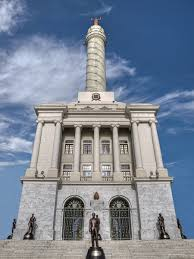

En esta pagina estaremos viendo los que son los algunos Monumentos de la republica dominicana
Monumento a los Heroes de la Restauracion

El Monumento a los Héroes de la Restauración es un obelisco ubicado en la ciudad de Santiago de los Caballeros, República Dominicana. Fue construido en honor a los héroes de la Guerra de la Restauración, la cual fue librada entre 1863 y 1865. La construcción del monumento fue iniciada en 1944 y concluida en 1949. El monumento fue diseñado por el arquitecto Henry Gazon Bona y el escultor italiano Giovani Bonnanno. El monumento fue inaugurado el 30 de enero de 1953 por el dictador Rafael Leónidas Trujillo. El monumento es uno de los más importantes de la República Dominicana y es uno de los más visitados por los turistas que visitan la ciudad de Santiago de los Caballeros.
Monumento padri fondatori
El Monumento a los Héroes de la Restauración de la República Dominicana es un monumento que rinde homenaje a los héroes que participaron en la Restauración de la República Dominicana. El monumento fue construido originalmente entre 1944 y 1961 para honrar a Rafael Trujillo. Sin embargo, después de la caída de su dictadura, fue profanado y convertido en un centro de delincuencia y prostitución.
Monumento Faro a Colon
El Faro a Colón es un monumento construido en honor a Cristóbal Colón, descubridor de América. El monumento fue construido en 1992 por el arquitecto Joseph Lea Gleave y el escultor J.L. Gerra. El monumento es uno de los más importantes de la República Dominicana y es uno de los más visitados por los turistas que visitan la ciudad de Santo Domingo. El monumento es una torre de 210 metros de altura que cuenta con una estatua de Cristóbal Colón en la parte superior. El monumento es uno de los más altos de América Latina y es uno de los más altos del mundo.